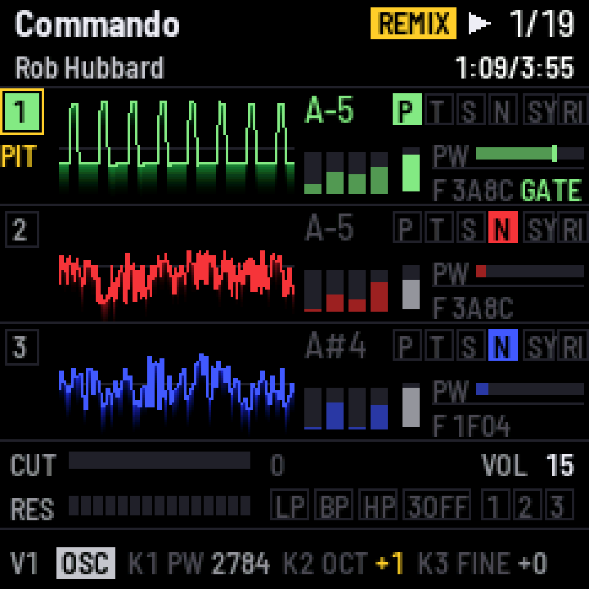
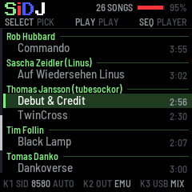
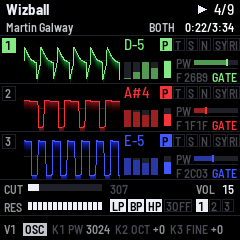
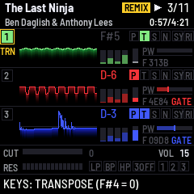

Turn the M-VAVE FM-1 into a C64 deck. Forty years of SID music, from 1980s game themes to this year's demo compo winners, play on a cycle-exact Commodore 64 inside the FM-1, and every voice is yours to remix live: transpose from the keys, mute and solo, swap waveforms, sweep the filter, ride the tempo and a vinyl fader.

On the FM-1
Each voice gets its own scope, note, waveform, envelope and pulse width, and the filter is laid out beneath. Whatever you change shows up in gold, with REMIX at the top, and two buttons put it all back.



What it does
Tens of thousands of tunes: game classics, demo bangers, today's compo winners. Each plays on the 6581 or 8580 it was written for and stops where HVSC says it ends.
Hold a key on the FM-1 or a MIDI keyboard and the voice follows, in time. Mute, solo, swap waveforms, bend envelopes and pulse width, push the cutoff up to 16×, give each voice its own LFO, and ride the tempo and a vinyl fader, from the panel or a controller's CCs. Two buttons put it all back.
Drive a SidStation, TherapSID, TeensyROM or USBSID-Pico over ASID, remix included, alone or alongside the emulation. Over the same cable the FM-1 is a driverless audio interface: the mix, or each voice on its own channel, straight into your DAW.
The browser emulator runs the very same firmware, panel and all. Drop a .sid on it and play.
Under the hood
Not a player that approximates. A Commodore 64 emulated cycle by cycle, with the SID engine the C64 scene measures itself against.
A 6510 with IRQ and NMI, both CIAs, the VIC's raster and bad lines. Every I/O access lands on its own cycle, so stable-raster code, NMI sample players and multi-speed tunes up to 38× run as written.
A fixed-point port of reSID 0.16, bit-exact with the original, as a 6581 or an 8580. The 8580's floating waveform DAC is there too, so tunes that play samples with the test bit sound as they should.
Pulse, sawtooth and the combined waveforms are averaged over every cycle of each sample instead of picked once a sample: narrow pulses stay steady and edges stay clean.
The SID writes match libsidplayfp's own C64 at a median of 99.99 % (PSID) and 99.92 % (RSID) over random HVSC tunes, and the audio load is measured on the FM-1 with the heaviest tunes found: no dropouts, by design. The details.
Get started
The installer works from M-VAVE's own firmware (V16 or V15), from Felucca, from X0X and from other open firmwares built on Felucca's updater. If a write is interrupted, the FM-1 stays in update mode: reconnect it and press Install again. If the FM-1 no longer starts, it falls back by itself. Two failed starts give a safe mode where PLAY tries again, and four give the chip's own update mode, which OCT− and OCT+ held for 5 seconds also reach. From there, the README's tools/fm1_rescue.sh or M-VAVE's FM-1 Transporter puts firmware back.
SiDJ is free software with no warranty. Installing custom firmware is at your own risk.
Download the official FM-1 firmware (V16) from M-VAVE and choose the unmodified FM-1.fwsc. An FM-1.fwsc of V15 you already have works too. The browser checks it here and sends it nowhere else. The songs on the FM-1 are not kept, because the official firmware can't read them.
| # | Song | Lengths | Size |
|---|
Two tunes of mine, from HVSC and CSDb, come with this page, with their song lengths. Add them in one go, or listen to them in the emulator first.
The High Voltage SID Collection is the archive of C64 music, free to download from hvsc.c64.org. Unpack it once, to a folder called C64Music. Open that folder here to search it by composer, title or group. Every tune you add gets its song lengths, and the files go from your disk straight to the FM-1.
The page remembers the folder, so next time it is one click (the browser asks to confirm).
SEQ switches between the song list and the player. A & B means hold A, then press B; a voice button is HOME, SAVE or ARP. The full manual is in the README, and the emulator lets you try every control.
Song list
Playing
Voices and keys
Waveforms
Filter
Knob pages
Back to the tune